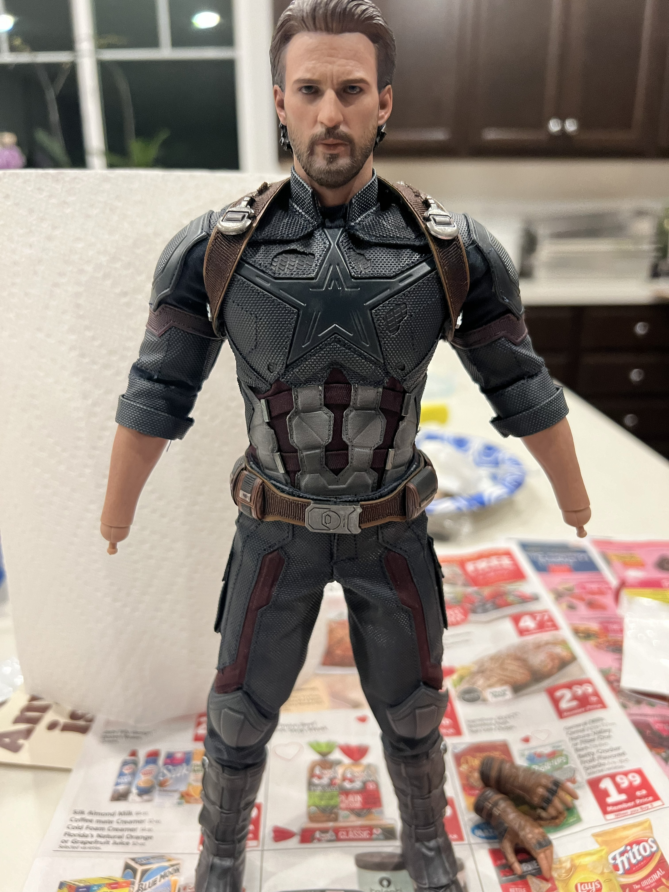
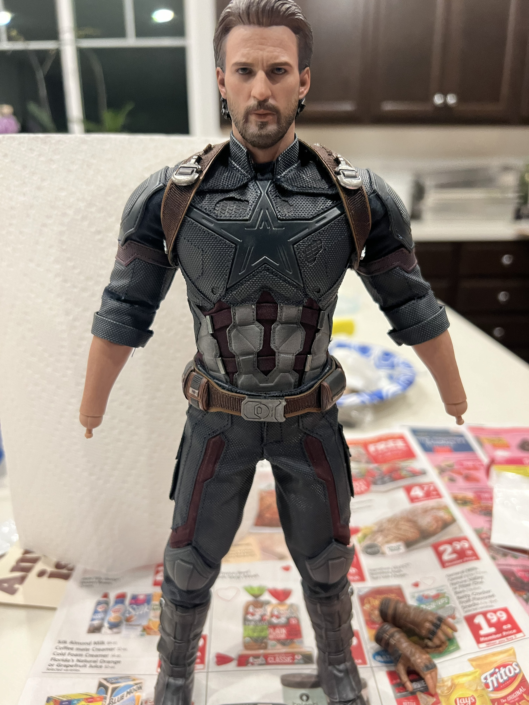
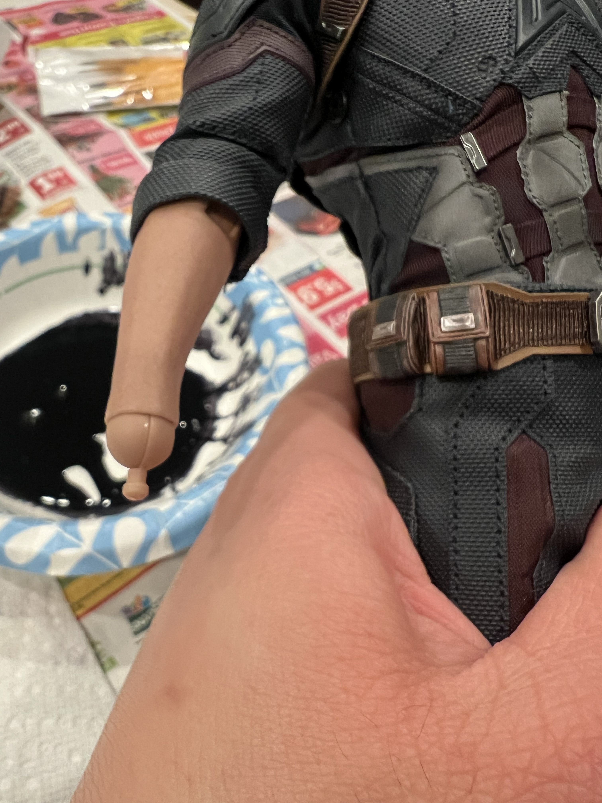
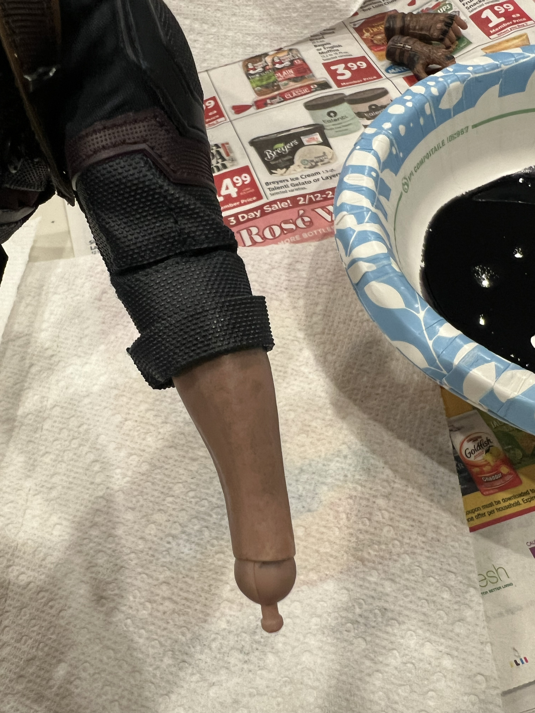
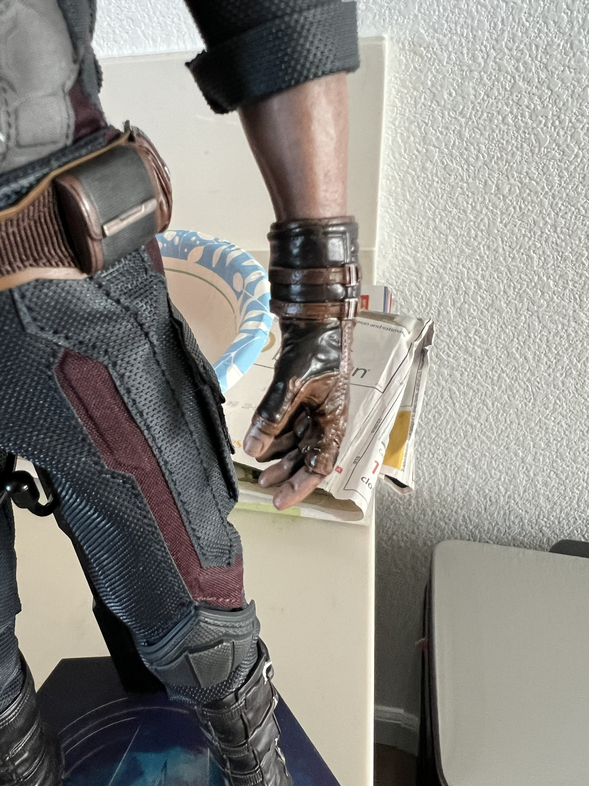

Step One: Remove accessories.
Remove all accessories that you don't want to be affected. I removed the gloves from this figure because I want to paint the entire forearm.
Now I am not the best at customizing, but check out below on the common steps on "weathering" your figure.
Remove all accessories that you don't want to be affected. I removed the gloves from this figure because I want to paint the entire forearm.
Start painting the desired area, then immediately wipe it down with a paper towel. I repeated this step about three times to achieve my desired look. Here is a picture of the before and after.
 Paint your accessories to give them a consistent look. This Captain America costume already had a weathered appearance, so I decided to paint the gloves as well. This was my favorite part because it now highlights the thumbnails and all the creases on this part of the figure.
Sit back and gaze at your customized figure! A lot of people don't like to make any customizations to their figures, but fortune favors the bold!